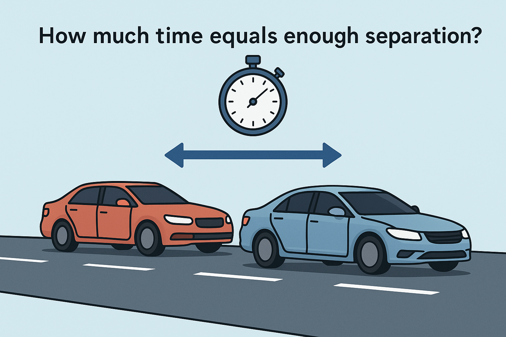

Modeling Safe Following Distance in Traffic

While researching why car insurance rates are so extremely high in Nevada, I got to thinking about the three-second rule and its validity. From what I’ve heard most of my life, the three-second rule refers to how far you should be behind a car in traffic. The idea is that you pick out a fixed roadside marker and you’re supposed to pass that marker at least three seconds after the car in front. That rule is simple enough, yet deceptively deep once you unpack the physics.
“Three seconds is a rule of thumb. Physics decides if it’s enough.”
I’ve always found that kind of rule fascinating because it’s both universal and situational. It works whether you’re cruising at 25 mph through town or flying down I-15 at 75 mph. At least, that’s what the manuals claim. But how does it hold up when you actually model two cars in motion, both braking under real-world conditions? That’s where the math and a little Python simulation come in handy.
The Thought Experiment
Imagine two cars traveling in a straight line, one behind the other at the same speed. The lead driver suddenly slams the brakes, and the follower reacts after a short delay before braking. The question is: how much time headway (in seconds) does the follower need to avoid a collision, given real reaction times and braking limits?
This problem is perfect for modeling because it hinges on two simple concepts: reaction time and deceleration. The follower can only start slowing down after noticing the lead car’s brake lights, processing what’s happening, and physically moving their foot to the brake pedal. In the meantime, they keep rolling forward at full speed.
If both vehicles have equal braking ability, a few seconds of buffer is enough. But if the road is wet or the follower’s tires are worn, that small delay compounds into a serious gap — the difference between a near miss and an insurance claim.
Modeling the Problem
To simulate the problem accurately (but tractably), we make the following simplifications:
Assumptions:
- Both vehicles start at the same constant speed.
- The leader begins full braking immediately at a constant rate.
- The follower reacts after a fixed delay (reaction time) and then brakes at their own (possibly different) deceleration rate.
- The goal is to find the minimum following distance or equivalent time gap to avoid impact.
The governing equation comes straight from kinematics:
[ d_0 \ge v \tau + \frac{v^2}{2a_F} - \frac{v^2}{2a_L} ]
where (v) = initial speed (ft/s) (\tau) = reaction time (s) (a_F) = follower’s deceleration (ft/s²) (a_L) = leader’s deceleration (ft/s²)
Dividing both sides by (v) gives the minimum headway time (h):
[ h \ge \tau + \frac{v}{2}\left(\frac{1}{a_F} - \frac{1}{a_L}\right) ]
Using AI to Scaffold the Code
You can ask an AI model to generate helper functions that compute required headway for different speeds and road conditions. The trick is to specify consistent units (imperial, not mixed), and remind the model that U.S. road speeds are typically in miles per hour (mph) but physics equations use feet per second (ft/s).
Prompt:
Write Python functions that compute the required following headway (in seconds) between two vehicles, given speed in mph, reaction time, and braking rates in ft/s² for the leader and follower. Include a helper to convert mph to ft/s and return a formatted table of results.
Here’s a compact implementation:
|
|
Simulation: Comparing Road Conditions
Now we can simulate how weather or vehicle condition affects the safe following distance. Wet roads reduce braking deceleration, and icy roads slash it dramatically.
Prompt:
Extend the code to compute required headway for three conditions: dry, wet, and icy pavement. Assume reaction time 1.5 s and braking rates: dry = (22,19.7), wet = (22,13.1), icy = (22,6.6) in ft/s². Plot headway versus speed.
|
|
Sample Output:
|
|
At highway speeds, a dry-road driver can manage comfortably within 3 seconds. But once traction drops — say after a summer rain — the safe gap can jump to 4 or even 6 seconds.
Making the Results Visual
A graph makes this instantly clear: three nearly parallel curves climbing upward with speed, each representing a different surface condition. The “3-second rule” line cuts across them, safe on dry pavement but marginal once you factor in weather. It’s one of those visuals that makes you instantly re-evaluate what feels “close enough” in traffic.
Prompt:
Generate a line chart comparing modeled headway time vs. speed for dry, wet, and icy surfaces, with a dashed horizontal line marking the 3-second rule.
The Python plotting script above already does exactly that.
What We Learned
The three-second rule is a clever rule of thumb because it scales automatically with speed. But real safety depends on reaction time and braking performance, which are never constant. The math shows that what feels like plenty of space on a sunny day might barely save you in the rain. The equation tells the truth drivers often forget: physics never negotiates.
Exercises for the Reader
The point of this model isn’t just driving safety; it’s how quickly a simple time-based rule can turn into a clean simulation. Try extending it.
Beginner Level: Quick Fixes & Calibration
- Driver reaction variation: Simulate a range of reaction times between 1.0 and 2.5 seconds and plot the resulting spread in safe following distances.
- Unit conversion check: Modify the code to accept metric inputs (km/h and m/s²) and compare the results to the imperial version.
Intermediate Level: Geometry & Body Modeling
- Vehicle length inclusion: Add the lengths of both vehicles to the minimum gap calculation and see how much total space is required in feet.
- Brake degradation: Model how worn brake pads reduce deceleration by a fixed percentage over time.
Advanced Level: Environment & Stochasticity
- Monte Carlo simulation: Randomize reaction time, braking rates, and initial speeds to simulate thousands of driver pairs and estimate collision probability.
- Sensor delay modeling: Add an extra 0.2-second lag for radar-based adaptive cruise control and see whether “three seconds” still holds.
Closing Thoughts
Driving physics is merciless, but at least it’s fair. Three seconds feels like forever until the moment you need every one of them.
Try It Yourself
Download the full code on GitHub